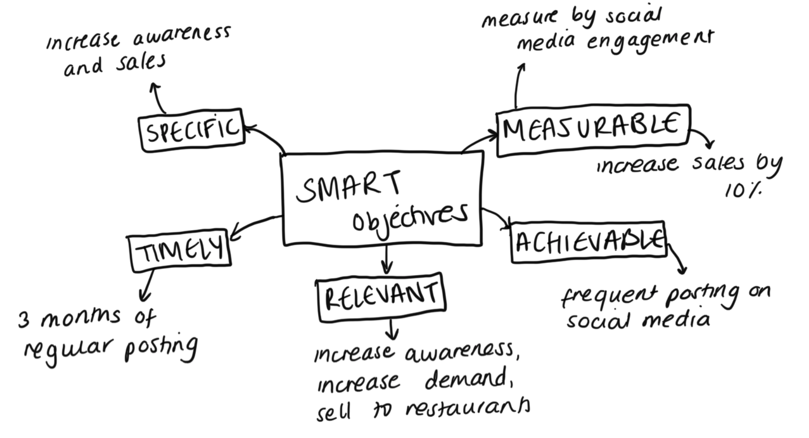
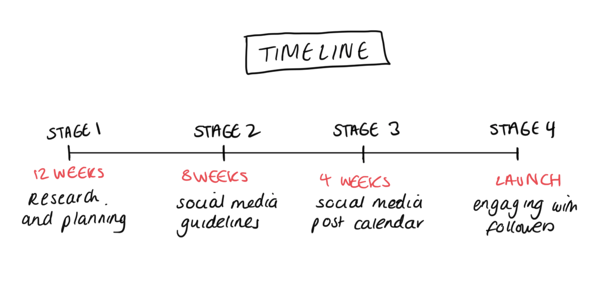

It is important for this digital marketing campaign that I outline what it is that I want to achieve. Originally my aim was to grow awareness for this product, however that is very vague, it is not specific and it is not measurable. That is why it is important to come up with SMART objectives. My specific goal is to increase the awareness and sales of Acai, and I will measure this by the engagement that can be seen on the brand's Instagram, as well as how the sales have increased during and after the campaign. The goal is to increase these sales in the UK by 10%. I will achieve this by frequent posting on social media, and this goal is worthwhile because if we can increase awareness, there will be an increase in the demand for this product for consumers, but also for restaurants and cafes, which will mean we can the supply this product on a larger level. In terms of the timeframe, I am allowing this social media campaign to run for three months, which will allow me to determine whether there is actually a demand for this product in the UK market.

It is also important to consider the budget for this campaign. I have decided to focus on just two social media platforms, which will be Instagram and Youtube, as these are visual platforms and acai bowls are a colourful and aesthetically pleasing product. I will use influencer marketing, which can be more expensive, but it is a good way to draw in a new audience and have a wider reach. To begin with, instead of paying them with money, it could be a product deal where the influencer has an affiliate code, meaning they get paid a percentage of every sale that was made using that promotional code. Another idea I have had is to recycle posts and encourage user generated content. If the account doesn't have a large following, to begin with we could reuse the same posts to cut costs. Encouraging user generated content will be useful as the audience will actually be marketing for us, which of course cuts costs.

I have also put together a timeline and project plan, the first stage of this would be 12 weeks before the campaign, which involves deciding which platforms to use based on research. The second stage would be around 8 weeks before the campaign, and that involves creating social media guidelines, which would include the key message of the posts, as well as some do's and don't's. The third stage would be 4 weeks before the campaign, and that would be producing a social media post calendar, to ensure that we know when to post, and that we are posting frequently and consistently. The fourth stage would involve the launch, and engaging with followers and audience, and the final stage would be post launch, which would involve analysing the engagement and sales data, to know what worked successfully and what didn't, this would also be very useful for future campaigns.